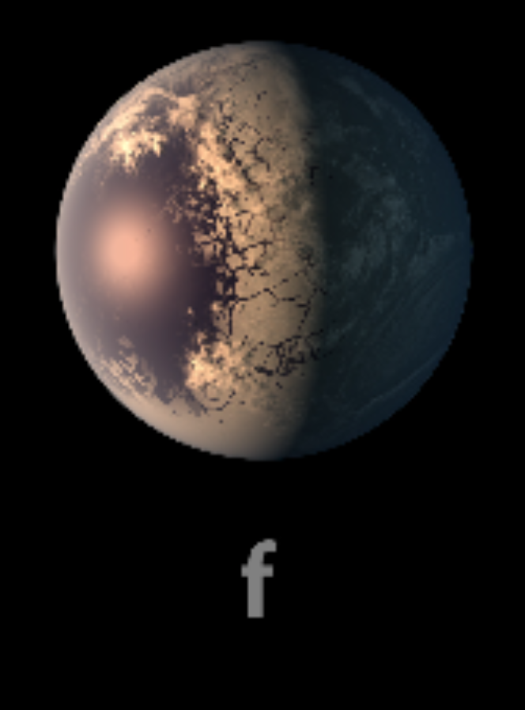

TRAPPIST-1 f

TRAPPIST-1 f es el quinto planeta del sistema. Se encuentra más lejos de la estrella que los planetas interiores.
Características
- Tipo: planeta rocoso.
- Periodo orbital: aproximadamente 9.21 días terrestres.
- Tiene un tamaño parecido al de la Tierra.
- Se encuentra en la zona habitable estimada.
Dato interesante
Debido a su posición, recibe menos energía de su estrella que los planetas b, c y d.
¿Podría tener vida?
Podría presentar temperaturas adecuadas si cuenta con una atmósfera apropiada. Su posible habitabilidad depende de condiciones que todavía se investigan.
Planeta anterior Todos los planetas Siguiente planeta